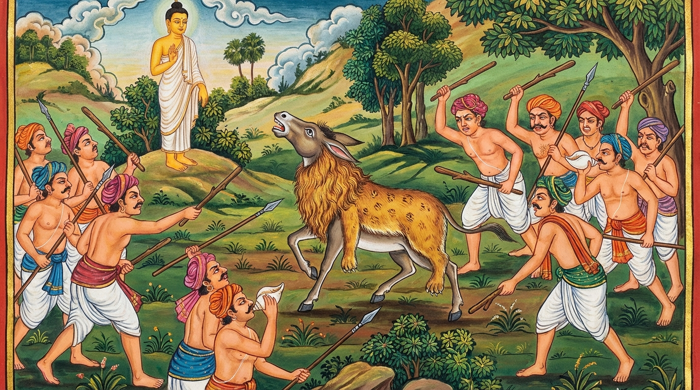

9. සීහචම්ම ජාතකය (189)
“නෙතං සීහස්ස නදිතං” (මේ සිංහයෙකුගේ නාදය නොවේ) යන මේ ධර්ම දේශනාව බුදුරජාණන් වහන්සේ ජේතවනාරාමයෙහි වැඩවසන සමයෙහි කෝකාලික තෙරුන් අරභයා දේශනා කළ සේක. ඒ තෙරුන් වහන්සේ එකල ස්වර නගා (සරභඤ්ඤ ක්රමයට) ධර්මය දේශනා කිරීමට කැමති විය. බුදුරජාණන් වහන්සේ ඒ පුවත අසා මේ අතීත කථාව ගෙනහැර දැක්වූ සේක.
අතීතයෙහි බරණැස් නුවර බ්රහ්මදත්ත රජු රාජ්ය කරන කල්හි, බෝසතාණන් වහන්සේ ගොවි කුලයක ඉපිද, වැඩිවිය පැමිණ ගොවිතැනින් ජීවිකාව ගෙන ගියහ. එකල එක් වෙළෙන්දෙක් කොටළුවෙකු පිට බඩු පටවාගෙන ගොස් වෙළඳාම් කරමින් හැසිරෙයි. ඔහු යන යන තැන්වලදී කොටළුවාගේ පිටින් බඩු බා, ඌට සිංහ හමක් පොරවා, වී සහ යව (බාර්ලි) කුඹුරුවලට මුදා හරියි. කුඹුරු රකින්නෝ ඌ දැක “මේ සිංහයෙකැ”යි සිතා බියෙන් ළංවීමට නොහැකි වෙති. ඉක්බිති එක් දිනක් ඒ වෙළෙන්දා එක්තරා ගම් දොරක නවාතැන් ගෙන, උදේ ආහාරය පිසින අතරතුර, කොටළුවාට සිංහ හම පොරවා යව කුඹුරකට මුදා හැරියේය. කුඹුරු රකින්නෝ “මේ සිංහයෙකැ”යි සිතා ළංවීමට නොහැකිව ගෙදරට ගොස් ගම්වාසීන්ට දැන්වූහ. සියලු ගම්වාසීහු ආයුධ ගෙන, සක් පිඹිමින් හා බෙර ගසමින් කුඹුර සමීපයට ගොස් මහත් ඝෝෂා කළහ. කොටළුවා මරණ බියෙන් තැතිගෙන කොටළු හඬින් කෑගැසුවේය. එකල ඌ කොටළුවෙකු බව දැනගත් බෝසතාණන් වහන්සේ මේ පළමු වන ගාථාව පැවසූහ.

“මේ සිංහයෙකුගේ නාදය නොවේ. ව්යාඝ්රයෙකුගේවත්, දිවියෙකුගේවත් නාදය නොවේ. සිංහ හමක් පොරවාගත් පහත් කොටළුවා නාද කරයි.”
එහි ජම්මො යනු ලාමක වූ හෙවත් පහත් වූ යන්නයි. ගම්වාසීහු ද ඌ කොටළුවෙකු බව දැන, ඇට කැඩෙන සේ තළා, සිංහ හම රැගෙන ගියහ.
ඉක්බිති ඒ වෙළෙන්දා එහි පැමිණ, විපතට පත් කොටළුවා දැක දෙවන ගාථාව පැවසීය.
“සිංහ හම පොරවාගෙන සිටි තාක් කල් කොටළුවාට බොහෝ කාලයක් නිල්වන් යව කෑමට හැකි විය. එහෙත් හඬ නගා කෑගැසීමෙන් ඌ තමාම විනාශ කර ගත්තේය.”
එහි තං යනු නිපාත මාත්රයකි. මේ කොටළුවා තමාගේ කොටළු ස්වභාවය නොදන්වා, සිංහ හම පොරවාගෙන සිටියේ නම් බොහෝ කාලයක් නිල්වන් යව කෑමට ඉඩ තිබුණි යන අර්ථයි. රවමානොව දූසයී යනු තමාගේ කොටළු හඬින් කෑගැසීම නිසාම තමා විනාශ විය යන්නයි. මෙහි සිංහ හමේ දෝෂයක් නැත. වෙළෙන්දා මෙසේ කියද්දීම කොටළුවා එහිම වැතිරී මළේය. වෙළෙන්දාද ඌ හැරදමා ගියේය.
ශාස්තෘන් වහන්සේ මේ ධර්ම දේශනාව ගෙනහැර දක්වා ජාතකය ගළපා වදාළ සේක. “එකල වෙළෙන්දා වූයේ දේවදත්තය. කොටළුවා වූයේ කෝකාලිකය. නුවණැති ගොවියා වූයේ මම ම වෙමි.”
නව වන සීහචම්ම ජාතක වර්ණනාවයි.